ハウパーヴィラその3
怒濤の奇想庭園、ハウパーヴィラの弾丸ツアーもあと少しである。 とはいってもやっと折り返し地点に到達しただけ。も少し付き合ってね。 先程の広場から、入口（出口）に向かう途中には池がある。池といっても普通の池じゃあない。 魚類と人類の幸福な合体。 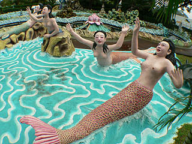 この人魚は先の広場の観音様がおわした噴水にいたが、近年池のほとりに移転して来た。この人魚をバックに中国系の娘さん達が恐ろしい程の枚数の記念写真を撮りまくっていた。何が彼女達の琴線に触れたのだろう？ って、カニ？！貝？ 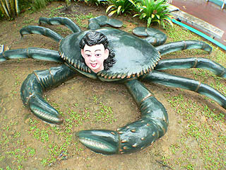 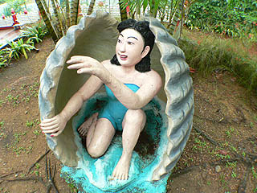 池は「胡」の字型だというがよくわかりませんでした。ただぐにゃぐにゃした細長い池だなあ、という感じ。池にミニチュアの建物や橋などが作られていて、その中にも油断ならない人達がちらほらと。 右の御婦人は爪楊枝でクルクルっと身を引き出す類いの貝でしょう。あれ、途中で切れると凄く悔しいんだよね〜。 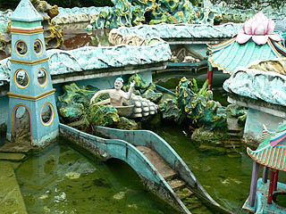 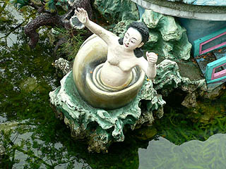 で、池の傍にはこんなスぺーシーな東屋。 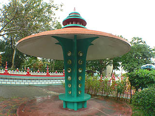 さらに進むと先程見た猿がいっぱいいた花果山の裏側の山に突き当たる。 ここには邪悪な顔付きの山羊がどこかに電話をしている。 横で耳を澄ます鹿、お茶汲みの亀、そして目を転じればすごすごと逃げようとしている兎と鼠。一体何なんだ。こりゃ。 良縁満美とあるのでもしかしたら結婚相談所？ってことは電話をしている山羊が縁を取り持ったカップルが兎と鼠？ どう見ても「悪徳」のふた文字しか浮かばない邪悪な目付きの山羊とやけにおどおどしたカップル。君達、大丈夫か？いざとなったら消費者センターに行くんだぞ。 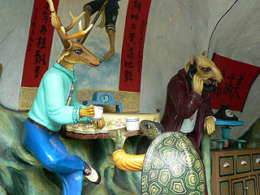 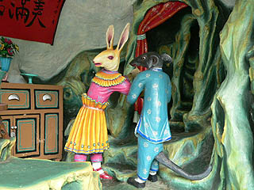 ニワトリのマスクを被った新手のプロレス。 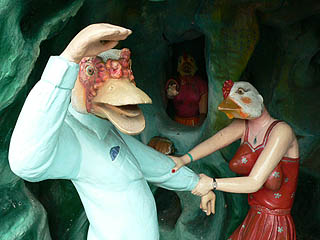 水晶宮と題されたジオラマ。 これは八神渡海の民話が元になっているそうだ。八神が海を渡ろうとすると竜神が阻止しようとして、戦いが始まるという話。 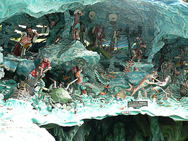 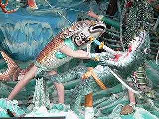 様々な怪物達がバトルを繰り広げている。かなりかぶりものチックな魚貝類である。 八神の内の一人が一番上から紐付き刀を投げてカエル人間に命中しているの図。ある意味飛び道具ですな。 こちらはキック命中、思わず墨を吐き出すイカ人間と八本足にさらに手が付いて十本足（手？）になっちゃったカニ人間。 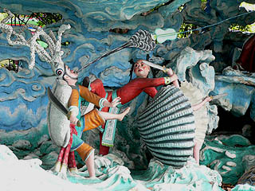 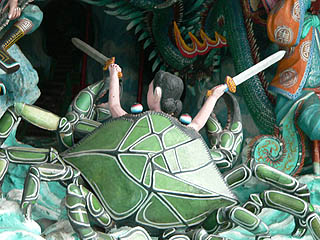 その他、伊勢海老人間、カメ人間、エイ人間、貝人間などが登場してシーフード類への偏愛が見て取れる、なかなか迫力があるジオラマであった。 お、来る時は見落としていたが、パゴダがパカっと割れて中から女性が現れてるじゃないか。プリンセス天功みたいでかっこいいぞ。 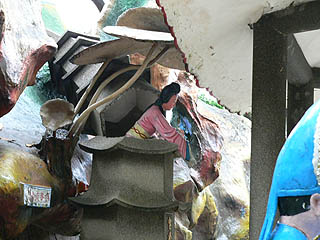 さて、そうこうしている内に最初に入って来た入口（出口）付近に来た。 しか〜し！ まだまだ終わらないのであった。 今までまわって来たのは1937年にオープンした当初のハウパーヴィラの部分なのだ。 1990年、この敷地の東側にオリジナルのハウパーヴィラと同じくらいの敷地を取得しテーマパークが開発されたのだ。 つまりテーマパーク化されたハウパーヴィラは、その敷地面積が一気に2倍になってしまったのだ！ ・・・とはいっても、テーマパークのアトラクションのほとんどは閉鎖されてしまい、現在は入れなくなっている。 しかしそこには魅惑の地獄巡りが待っているのだ。行かないわけには参るまい。 で、最初に入って来た門を出ずに東方向に進む。 いきなりタイガーバームを両手に抱えたタイガーバム子とバム男がお出迎え。ああ、何だか脱力〜。 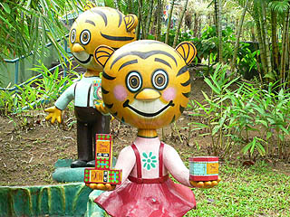 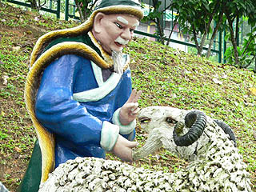 目付きの悪い羊を説き伏せるお方。「すいません、あと2日、2日だけ待って下さい・・・」 旧テーマパークエリアは有料（注；翡翠博物館とセット料金になってました）。 そのゲートの前にはドーンとタイガーカーが鎮座してました。胡文虎氏、こんなの乗ってたのかあ〜。 1932年製。しかも2代目のタイガーカーである。これを町中で乗り回せる人はかなり勇気のいる人だと思う。 つーか絶対乗りたくないんですけど、助手席ですら。 私自身は乗りたくないが、やっぱ胡文虎クラスのグレイトな人にはこういう車に乗っていて欲しい。 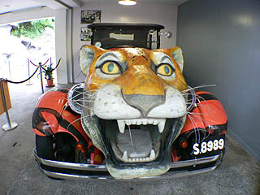 てなわけで、ゲートを潜り、いよいよ十大地獄へ。 ・・・とその前にダークな屋外展示がちらほら。 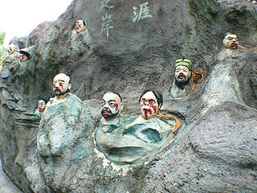 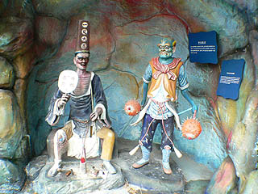 何故か鼠と兎が戦争してました。 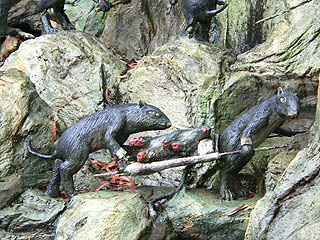 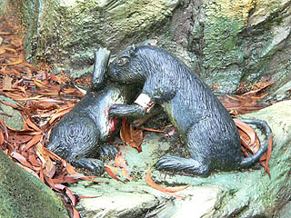 で、いよいよ十大地獄である。地獄はハウパーヴィラ唯一の屋内施設。地獄の番人がお出迎えしてくれます。 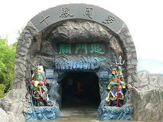 実は、この地獄、最近まで巨大な龍のカタチをしていてハウパーヴィラのシンボルとなっていた。 下左はテーマパーク時代の絵ハガキ、右はほぼ同じところから撮った現在の様子。 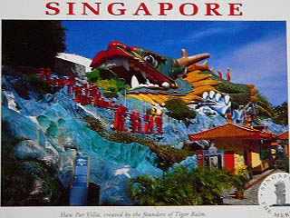 長さ60メートルの巨大な龍が無くなってナマコみたいなトンネルになっているのがおわかりだろうか。 何故こんな立派な龍をナマコにしてしまったのか、真相はわからないが勿体ないとしかいいようがない。 テーマパーク時代は龍の中が水路になっていてボートに乗っての地獄巡り、というかなりオツな趣向だった。 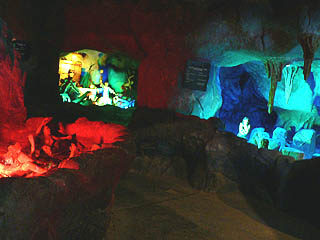 内部は薄暗く、地獄のジオラマだけが妖しい光に照らされている。 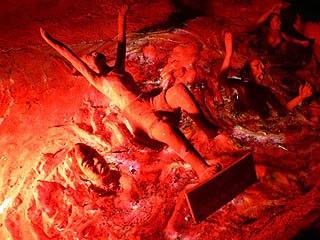 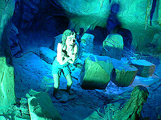 暖房効き過ぎ地獄と冷房効き過ぎ地獄 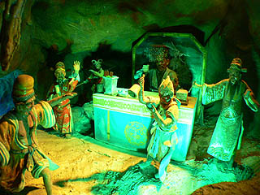 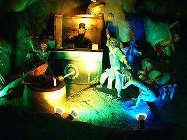 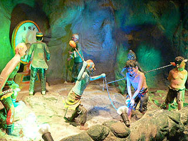 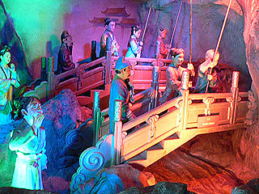 閻魔様の裁きから判決、そして地獄の責め苦といった地獄巡りの黄金パターンが延々と繰り広げられている。 台湾やタイなどにあった地獄巡りとほぼ同じ構成だ。ただし電動とかではないが。 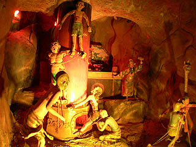 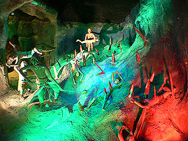 かつて水路だった名残りだろうか、途中に橋が架かっており、その欄干は生首。 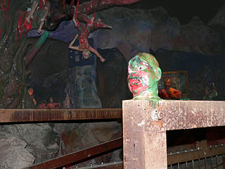 かなり残虐な責め方ですな。 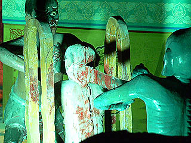 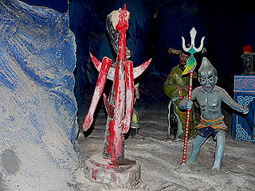 これはテーマパーク時代に作られたものなので、もちろん胡文虎のセンスではない。 胡文虎の彫像には先の説教ジオラマにも若干グロい表現はあったがあくまでも必要最低限の表現に抑えられていたように思える。 こうしてエグエグの地獄と比べてみると胡文虎のデザインセンスの特徴がはっきりしてくる。 あくまでもエレガントに道徳的に。でもキッチュに。教育啓蒙施設という創設目的を考えれば当然の事といえよう。 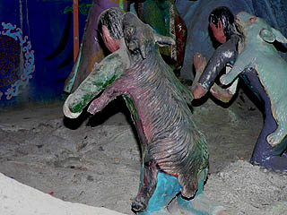 ホラ、動物のかぶり方も違うでしょ。 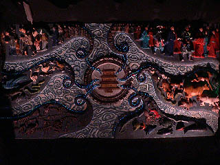 最後は六道輪廻のレリーフで地獄巡りは終了。青いライトによる縁取りがオシャレだ。青色発光ダイオードか？ 地獄を出るとかつてはテーマパークのメインステージだった円形劇場の前に出る。 その周りにも様々な彫像がある。 そのなかでも飛び抜けて衝撃的なシーン。 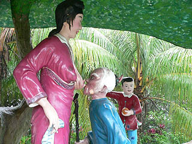 これは歯のないお婆さんに嫁が乳を飲ませるという感動的なのか何なのか良くわからないシーン。 嫁さんの誇らしげな表情が印象的だった。 このエピソードは二十四孝のうちのひとつ。つまり中国孝行者ベスト24に選ばれた行為だそうで。 そりゃあここまですれば、二十四孝にも選ばれるわな〜。 いやいや、コレをビジュアル化したくなる気持ち、わかりますわかります。 一方こちらは土木作業中の皆さん。何をしているのか知らないがかなり劣悪な労働条件とお察しします。 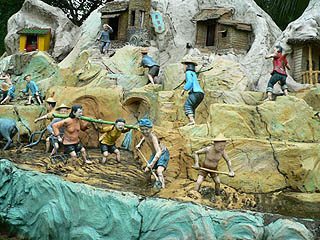 こんな顔してるんですから。 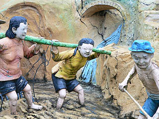 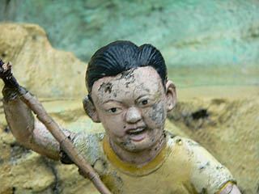 ドーム型の円形劇場。 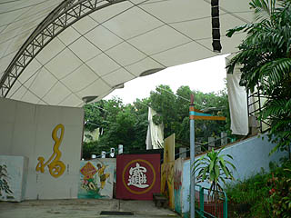 かつては「効き目抜群！萬金油物語」とか「豹と虎の愉快な曲芸ショー」とかやっていたんだろうか。 今は入口が塞がれていて中に入れない。空が見えている部分は屋根の布が破れてとれちゃったところです。 結局この先は閉鎖されていて、奥にあるスライダーなどの様子はわからなかった。少し無茶すればどこか入れるところもあったのかも知れないがかなり雨がはげしくなってきたのでこの辺でお開きにしたい。 最後に円形劇場の前にあったケーキみたいなモノ。 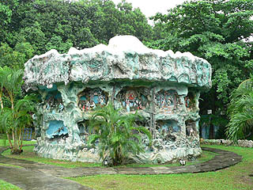 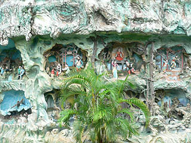 中にはひとつひとつ何かのエピソードが描かれている。 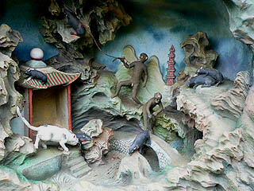 それにしてもこの作り込みよう、この規模、このデザインセンス。考えた胡文虎も凄いがそれを具現化した職人も凄い。このハウパーヴィラの彫像が作られたのは大きく分けて創成期の1930年代、戦後の1950年代、そしてテーマパークに改造した1980年代に分けられる。このうち創成期と戦後の時期はメンバーこそ違えど、彫像を作った職人はわずか4人程だったという。この職人達にも胡文虎同様に敬意を表したい。 現在でもメンテナンス専門に2人の職人が常駐しているそうだ。兎の耳が折れてました。よろしくお願いします。 ハウパーヴィラがオープンした1937年といえば昭和12年。日本ではコンクリ大仏をはじめ数々のコンクリ造型師が出現した時代である。 セメントが比較的容易に入手出来るようになったこの時代は同時に世界中にコンクリ造形師の種子がまかれた時代でもあったのだろう。 よくハウパーヴィラの彫像を評して「技術は稚拙だが・・・」的な表現を聞くが、アジア各国のコンクリ像を見て来た私が見る限り、コンクリ造形師としてはかなりイイ仕事をしたといっていい。そりゃあ、ヨーロッパの彫刻庭園に比べればポンチかもしれないが、コンクリ像独特のキッチュさ、妖しさ、インチキ臭さ、そして何よりもハッピー感は頭抜けている。単なる道徳とか善行を啓蒙する説教オヤジのウンチク展示ではなくビジュアル的な目の快楽を最優先に掲げてあるところが素晴らしい。 だから私は大理石の彫像がずらりと並ぶ荘厳な庭園と同じ位このハウパーヴィラは価値があると思う。正直、アタシにとっちゃハウパーヴィラの方が価値は高いんです。 嗚呼、亜細亜の至宝、虎豹別墅よ、永遠なれ 完
ハウパーヴィラ；ホーム ハウパーヴィラその１ ハウパーヴィラその２ ハウパーヴィラその３ 馬来半島珍寺伝説
珍寺大道場 HOME